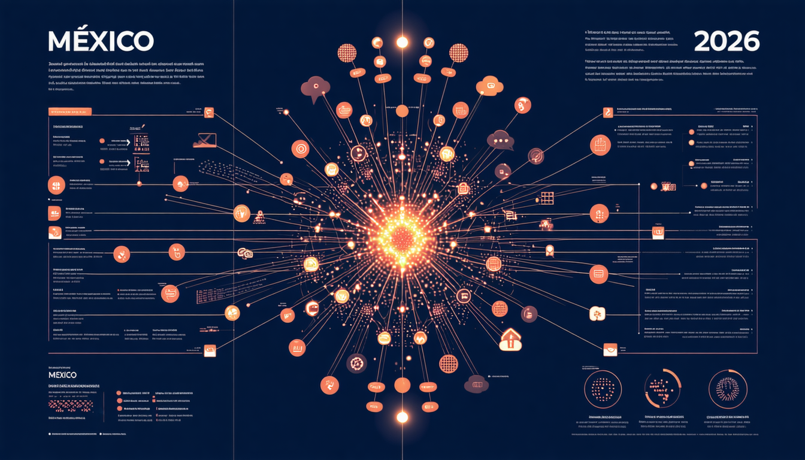
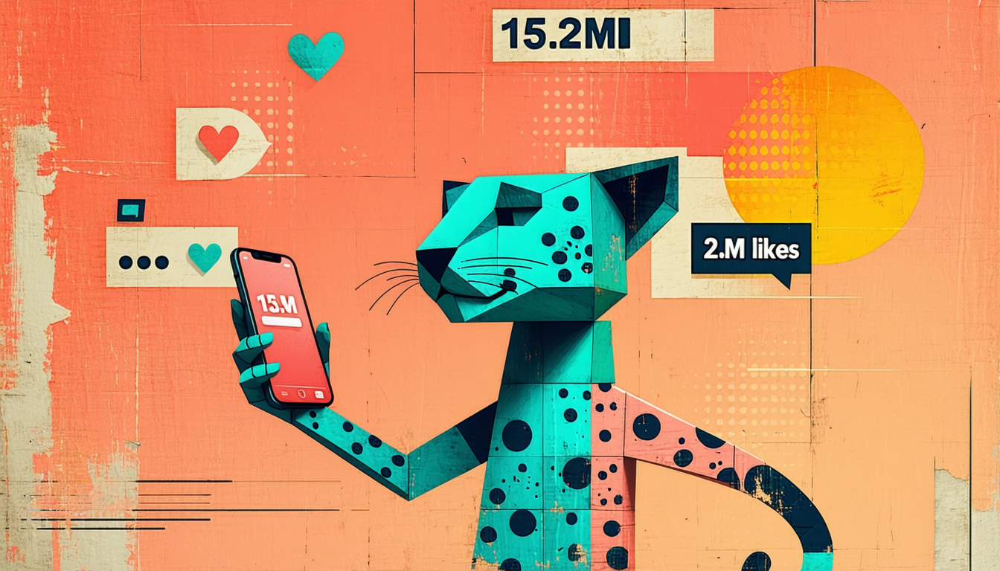
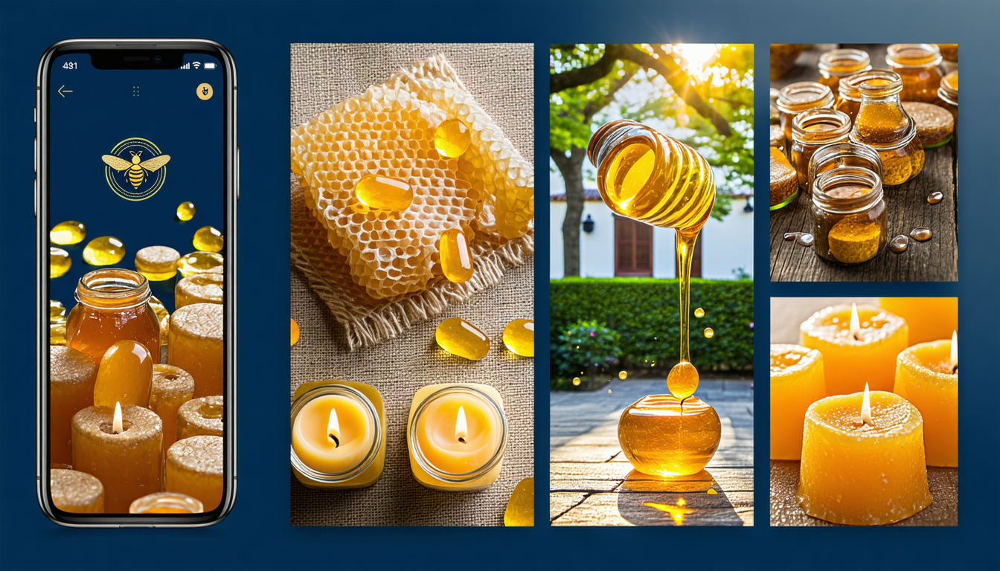

Objetivo de aprendizaje: Comprender el rol, funciones e influencia del Community Manager y aplicar técnicas básicas de monitorización y dinamización en plataformas reales.
Nivel Bloom: Comprender / Aplicar
💭 Reflexión: ¿En cuántas de estas plataformas tienes cuenta activa? ¿En cuáles pasas más tiempo?
18-34 años. Visual, aspiracional. Reels + Stories. 67% descubre marcas nuevas aquí.
15-24 años. Descubrimiento, entretenimiento. 40% busca productos/restaurantes AQUÍ antes que Google.
Todas las edades. Canal #1 de atención al cliente en México. Catálogo + respuestas rápidas.
25-45 años. Networking profesional. Marcas B2B, liderazgo de opinión, reclutamiento.

8am: Revisar mensajes nocturnos
9am: Publicar contenido programado
11am: Crear contenido nuevo
1pm: Responder comentarios/DMs
3pm: Analizar métricas
5pm: Planificar siguiente día
Foco: La comunidad
Día a día: Responder, moderar, dinamizar
KPI: Engagement, tiempo de respuesta
Metáfora: El anfitrión de la fiesta
Foco: La estrategia
Día a día: Planificar, medir, optimizar
KPI: ROI, crecimiento, conversión
Metáfora: El arquitecto
Foco: El contenido
Día a día: Diseñar, grabar, editar
KPI: Calidad, viralidad, views
Metáfora: El artista
💭 ¿Cuál de estos 3 roles te atrae más? ¿Por qué? En una PyME de Mérida, generalmente una sola persona hace los 3.
Lección: Dale a tu audiencia una razón EMOCIONAL para seguirte.

💭 ¿Qué marca en Mérida podría usar una estrategia similar? ¿Qué "personaje" le darías?
Diseño, edición de video, subtítulos automáticos
Programar publicaciones, gestionar calendario
Medir alcance, engagement, tráfico web
Ideas de contenido, copies, chatbots de atención
💭 ¿Cuáles de estas habilidades ya tienes? ¿Cuáles quieres desarrollar durante este curso?
"Conocer tu contexto local es tan importante como conocer las tendencias globales"
• Coquí Coquí — Identidad visual impecable
• Ki'Xocolatl — UGC natural de turistas
• Taquería La Lupita — Humor en redes
• Wayan'e — Storytelling gastronómico

Canva Infografía
Genially interactivo
Video infográfico (CapCut)
⚠️ Regla de oro: La IA es un borrador. TÚ eres el editor. Nunca publiques sin personalizar.
💭 Abre ChatGPT ahora y pídele: "Dame 5 ideas de publicaciones para [tu marca local favorita]". ¿Qué tan buenas son?
"Comunicar con estrategia es pensar antes de publicar."